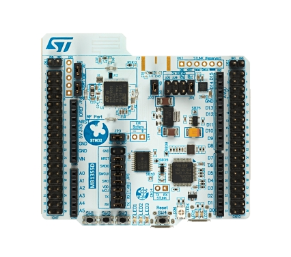
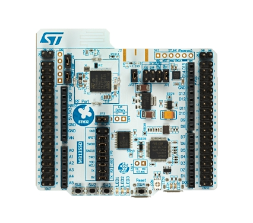

ST Web Bluetooth App Interfaces
Introduction
WBA vs WB
 

| WBA | WB |
|---|---|
STM32 WB

Overview
The innovative architecture of STM32WB MCUs is based on two totally independent cores, optimized for real-time execution (radio-related software processing). It enables flexible resource use and efficient power management.
Based on our ultra-low power STM32L4 microcontrollers, the STM32WB MCU series provides the same digital and analog peripherals suitable for applications requiring an extended battery life and complex functionalities.
- STM32WBx5 wireless microcontrollers, available in multiple packages and different memory sizes, provide users with enhanced performance and flexibility to address different levels of complexity.
- The STM32WBx0 Value Line focuses on the essentials and offers a feature-optimized, cost-effective solution for developers.
- The STM32WBxM line of modules offers the same feature set as the STM32WBx5 line. The module integrates the full reference design in a small LGA86 package (7 x 11.3 mm) and offers a wide certification coverage